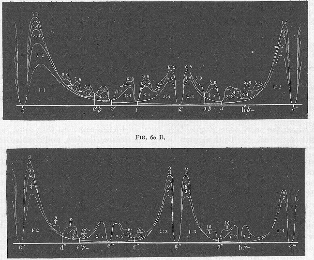

"To obtain a general graphical representation of the complicated relations which co-operate to produce the effect, I have made such a calculation, knowing that diagrams teach more at a glance than the most complicated descriptions, and have hence constructed figs. 60, A and B. In order to construct them I have been forced to assume a somewhat arbitrary law for the dependence of roughness on the number of beats. I chose for this purpose the simplest mathematical formula which would show that the roughness vanishes when there are no beats, increases to a maximum for 33 beats, and then diminishes as the number of beats increases. Next I have selected the quality of tone on the violin in order to calculate the intensity and roughness of the beats due to the upper-partials taken two and two together, and from the final results I have constructed figs. 60 A and B. The base lines c'c'', c''c''' denote those parts of the musical scale which lie between the notes thus named, but the pitch is taken to increase continuously [as when the finger slides down the violin string], and not by separate steps [as when the finger stops off definite lengths of the violin string]. It is further assumed that the notes or compound tones belonging to any individual part of the scale, are sounded together with the note c', which forms the constant lower note of all the intervals. Fig. 60 A, therefore, shows the roughness of all intervals which are less than an Octave, and fig. 60 B of those which are greater than on Octave, and less than two. Above the base line there are prominences marked with the ordinal numbers of the partials. The height of these prominences at every point of their width is made proportional to the roughness produced by the two partial tones denoted by the numbers, when a note of corresponding pitch is sounded at the same time with the note c'. The roughness produced by the different pairs of upper partials are erected one over the other. It will be seen that the various roughnesses arising from the different intervals encroach on each other's regions, and that only a few narrow valleys remain, corresponding to the position of the best consonances, in which the roughness of the chord is comparatively small. The deepest valleys in the first Octave c'c'' belong to the Octave c', and the Fifth g'; then comes the Fourth f, the major sixth a', and the major Third e', in the order already found for these intervals. The minor Third e'flat and the minor Sixth a'flat, have 'cols' rather than valleys, the bottoms of their depressions lie so high, corresponding to the greater roughness of these intervals."
"In the second Octave as a general rule all those intervals of the first
Octave are improved, in which the smaller of the two numbers expressing
the ratio was even; thus the Twelfth 1:3 or c'g'', major Tenth 2:5 or c'e'',
subminor Fourteenth 2:7 or c'b''flat, and subminor Tenth 3:7 or c'e''flat-
are smoother than the Fifth 2:3 or c'g', major Third 4:5 or c'e',
subminor seventh 4:7 or c'b'flat-, and subminor Third 6:7 or c'e'flat-.
The other intervals are relatively deteriorated. the Eleventh or c'f''
or increased Fourth is distinctly worse than the major Tenth c'e''; the
major Thirteenth or c'a'', or increased major Sixth, is similarly worse
than the subminor Fourteenth c'b''flat-. The minor Third or c'e'flat, when
increased to a minor Tenth or c'e''flat, and the minor Sixth or c'a'flat,
when increased to a minor Thirteenth or c'a''flat, fare still worse,
on account of the increased disturbance of the adjacent intervals. The
conclusions here drawn from the calculation are easily confirmed by experiments
on justly intoned instruments. That they are also attended to in the practice
of musical composition, notwithstanding the theoretical assumption that
the nature of a chord is not changed by altering the pitch of any one of
its constituents by whole octaves, we shall see further on, when considering
chords and their inversions.
The Man